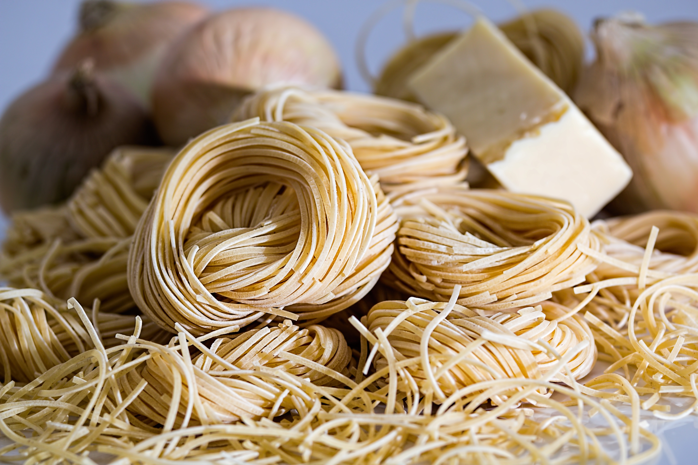

American Chop Suey

Ingredients
- 1 lb. of pasta
- 1 lb. ground beef
- 2 cloves of garlic
- 2 cans of condensed tomato soup
- 2 cans of stewed tomatoes
- Salt to taste
Instructions
- Bring salted water to a boil and cook pasta until tender or according to package directions.
- Brown ground beef over medium high heat.
- As the beef is almost done, add garlic and cook for 1 minute.
- Add condensed tomato soup and canned stewed tomatoes to beef and simmer. If unavailable, you may substitute regular tomato soup with added sugar for the condensed tomato soup.
- Add cooked pasta to sauce and stir.